Chrome的开发者工具已经强大到没朋友的地步了，特别是其功能丰富界面友好的console，使用得当可以有如下功效：
- 更高「逼格」更快「开发调试」更强「进阶级的Frontender」
- Bug无处遁形「Console大法好」
console.log
大家都会用log，但鲜有人很好地利用console.error , console.warn 等将输出到控制台的信息进行分类整理。
他们功能区别不大，意义在于将输出到控制台的信息进行归类，或者说让它们更语义化。
各个所代表的语义如下：
console.log：普通信息console.info：提示类信息console.error：错误信息console.warn：警示信息
当合理使用上述log方法后，可以很方便地在控制台选择查看特定类型的信息。
|
|
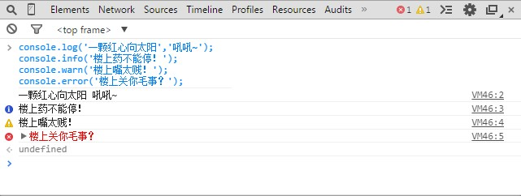
如果再配合console.group 与console.groupEnd，可以将这种分类管理的思想发挥到极致。这适合于在开发一个规模很大模块很多很复杂的Web APP时，将各自的log信息分组到以各自命名空间为名称的组里面。
|
|
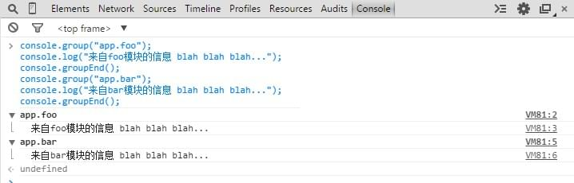
而关于console.log，早已被玩儿坏了。一切都源于Chrome提供了这么一个API：第一个参数可以包含一些格式化的指令比如%c。
比如给hello world 做件漂亮的嫁衣再拉出来见人：
|
|
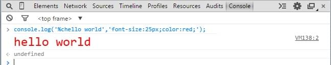
如果你觉得不够过瘾，那就把你能写出来的最华丽的CSS样式都应用上吧，比如渐变。于是你可以得到如下华丽丽的效果：
|
|
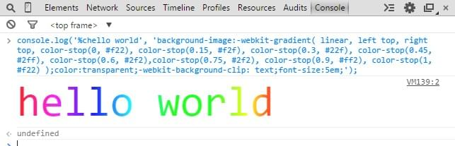
各种招大招的节奏啊~
看着上面密集的代码不用惊慌，上面console.log()第二个参数全是纯CSS用来控制样式的，你不会陌生。而第一个参数里可以带用百分号开头的转义指令，如上面输出带样式的文字时使用的%c指令。更详细的指令参见官方API文档的这个表格。
如果还不够过瘾，那咱们来log一些图片吧，甚至。。。动图？
对，你得先有图，我们拿这张图为例。
|
|
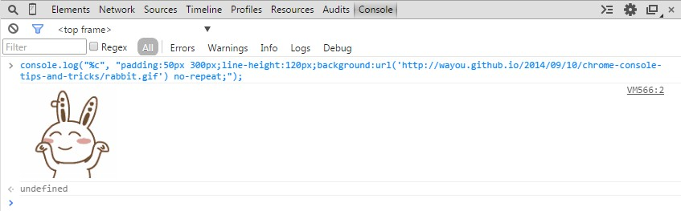
看着上面摇摆的豆比兔是不是有种抽它一脸的冲动。
除此，console.table 更是直接以表格的形式将数据输出，不能赞得太多！
借用之前写过的一篇博文里的例子：
|
|
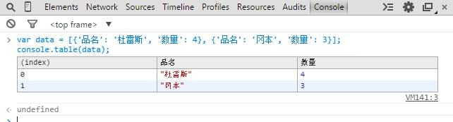
另外，console.log() 接收不定参数，参数间用逗号分隔，最终会输出会将它们以空白字符连接。
|
|
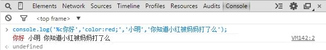
cosole.assert
当你想代码满足某些条件时才输出信息到控制台，那么你大可不必写if或者三元表达式来达到目的，cosole.assert便是这样场景下一种很好的工具，它会先对传入的表达式进行断言，只有表达式为假时才输出相应信息到控制台。
|
|
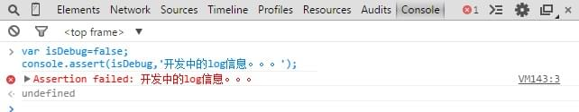
console.count
除了条件输出的场景，还有常见的场景是计数。
当你想统计某段代码执行了多少次时也大可不必自己去写相关逻辑，内置的console.count可以很地胜任这样的任务。
|
|

console.dir
将DOM结点以JavaScript对象的形式输出到控制台
而console.log是直接将该DOM结点以DOM树的结构进行输出，与在元素审查时看到的结构是一致的。不同的展现形式，同样的优雅，各种体位任君选择反正就是方便与体贴。
|
|
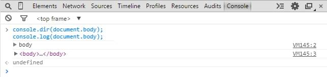
console.time & console.timeEnd
输出一些调试信息是控制台最常用的功能，当然，它的功能远不止于此。当做一些性能测试时，同样可以在这里很方便地进行。
比如需要考量一段代码执行的耗时情况时，可以用console.time与 console.timeEnd来做此事。
这里借用官方文档的例子：
|
|
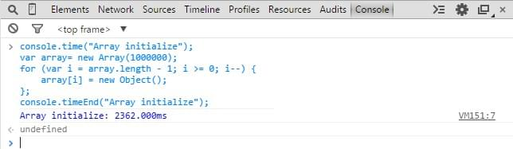
当然，我们也可以选择自己写代码来计时：
|
|
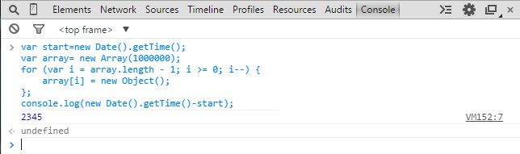
相信你也看到了，用内置的console.time是多么地方便，省去了自己写代码来计算的工作量。另外值得一提的是，通过调用内置的console.time得到的结果要比自己手动计算的时间差更精确可靠。
console.profile & console.timeLime
当想要查看CPU使用相关的信息时，可以使用console.profile配合 console.profileEnd来完成这个需求。
这一功能可以通过UI界面来完成，Chrome 开发者工具里面有个tab便是Profile。
与此类似的功能还有console.timeLine配合 console.timeLineEnd,它的作用是开始记录一段时间轴，同样可以通过Chrome开发者工具里的Timeline 标签来进行相应操作。
所以在我看来这两个方法有点鸡肋，因为都可以通过操作界面来完成。但至少他提供了一种命令行方式的交互，还是多了种姿势供选择吧。
console.trace
堆栈跟踪相关的调试可以使用console.trace。这个同样可以通过UI界面完成。当代码被打断点后，可以在Call Stack面板中查看相关堆栈信息。
pic goes here
上面介绍的都是挂在window.console这个对象下面的方法，统称为Console API，接下来的这些方法确切地说应该叫命令，是Chrome内置提供，在控制台中使用的，他们统称为Command Line API。
$
似乎美刀总是被程序员及各种编程语言所青睐「你看看PHP代码就知道PHPer有多爱钱了」，在Chrome的控制台里，$用处还真是蛮多且方便的。$_命令返回最近一次表达式执行的结果，功能跟按向上的方向键再回车是一样的，但它可以做为一个变量使用在你接下来的表达式中：
|
|
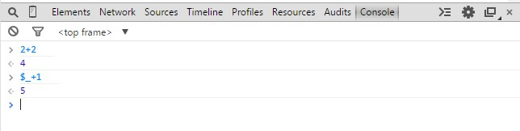
上面的$_需要领悟其奥义才能使用得当，而$0~$4则代表了最近5个你选择过的DOM节点。
什么意思？在页面右击选择审查元素，然后在弹出来的DOM结点树上面随便点选，这些被点过的节点会被记录下来，而$0会返回最近一次点选的DOM结点，以此类推，$1返回的是上上次点选的DOM节点，最多保存了5个，如果不够5个，则返回undefined。
另外值得一赞的是，Chrome 控制台中原生支持类jQuery的选择器，也就是说你可以用$加上熟悉的css选择器来选择DOM节点，多么滴熟悉。
|
|
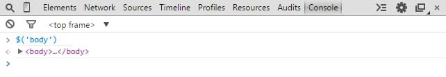
$(selector)返回的是满足选择条件的首个DOM元素。
剥去她伪善的外衣，其实$(selector)是原生JavaScript document.querySelector() 的封装。
同时另一个命令$$(selector)返回的是所有满足选择条件的元素的一个集合，是对document.querySelectorAll() 的封装。
|
|
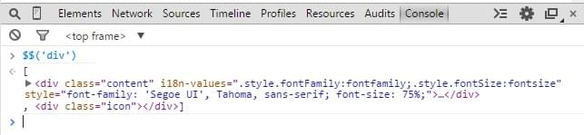
copy
通过此命令可以将在控制台获取到的内容复制到剪贴板。
|
|
然后你就可以到处粘了：
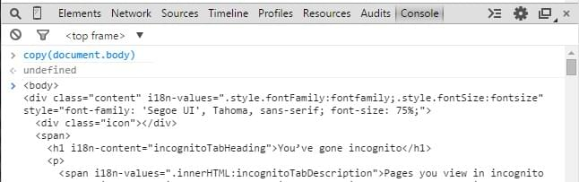
看完此条命令行，机智的你是不是跟脑洞全开的我一样，冒出了这样一个想法：那就是通过这个命令可以在JavaScript里进行复制操作从而不用依赖Flash插件了。
But现实是残酷的，如之前所述的，这里的控制台命令只能在控制台中环境中执行，因为他不依附于任何全局变量比如window，所以其实在JS代码里是访问不了这个copy方法的，所以从代码层面来调用复制功能也就无从谈起。但愿有天浏览器会提供相应的JS实现吧~
keys & values
这是一对基友。前者返回传入对象所有属性名组成的数据，后者返回所有属性值组成的数组。具体请看下面的例子：
|
|
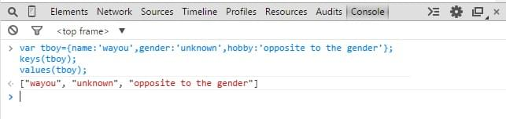
monitor & unmonitor
monitor(function)，它接收一个函数名作为参数，比如function a,每次a被执行了，都会在控制台输出一条信息，里面包含了函数的名称a及执行时所传入的参数。
而unmonitor(function)便是用来停止这一监听。
|
|
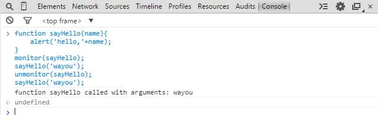
debug & undebug
debug同样也是接收一个函数名作为参数。当该函数执行时自动断下来以供调试，类似于在该函数的入口处打了个断点，可以通过debugger来做到，同时也可以通过在Chrome开发者工具里找到相应源码然后手动打断点。
而undebug 则是解除该断点。
而其他还有好些命令则让人没有说的欲望，因为好些都可以通过Chrome开发者工具的UI界面来操作并且比用在控制台输入要方便。